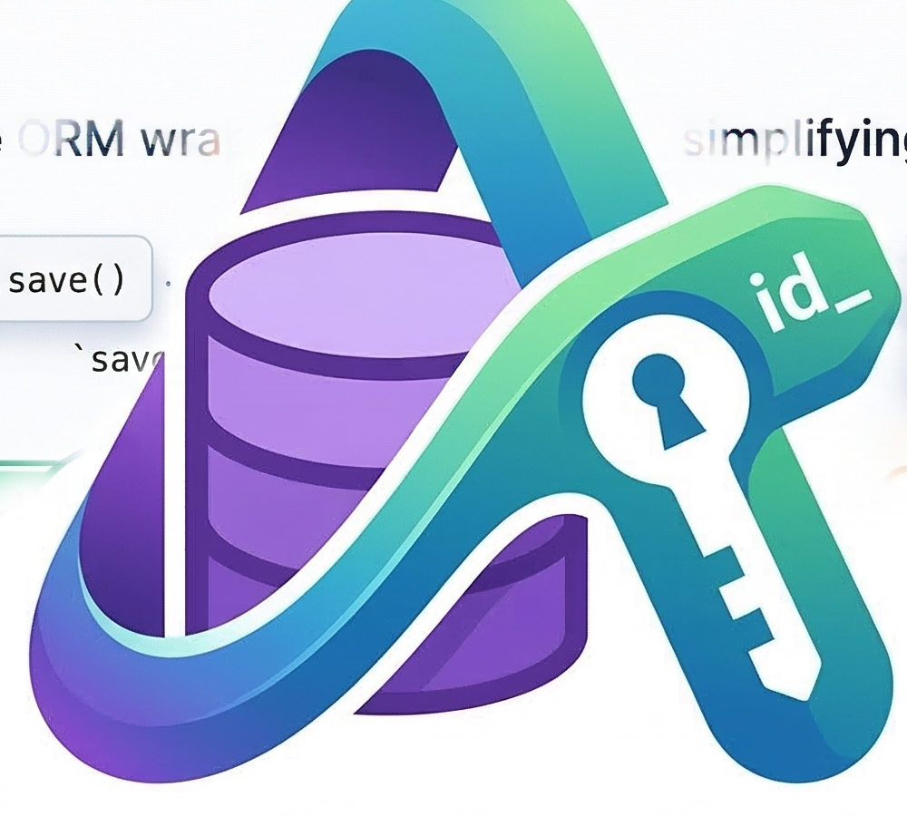

ActiveModel: ORM Wrapper for SQLModel¶

No, this isn’t really ActiveModel. It’s just a wrapper around SQLModel that provides a ActiveRecord-like interface.
SQLModel is not an ORM. It’s a SQL query builder and a schema definition tool. This drives me nuts because the developer ergonomics are terrible because of this.
This package provides a thin wrapper around SQLModel that provides a more ActiveRecord-like interface with things like:
ActiveRecord-style Query & Persistence API: Fluent methods like
save(),where(),find_or_create_by(), andupsert()for intuitive database operations.Implicit Session Management: Automatically handles database sessions, eliminating boilerplate and making database interactions feel “magic”.
Stripe-style IDs (TypeID): Native support for type-safe, prefixed, and sortable UUIDs with a built-in
TypeIDMixin.whenever datetime types: Optional integration for
whenever.Instant,whenever.PlainDateTime, andwhenever.ZonedDateTimeas first-class field annotations.Timestamp Column Mixins: Standard
created_atandupdated_attracking out of the box.Lifecycle Hooks: Rails-style callbacks like
before_save,after_create, andaround_delete.Automatic DB Comments: Syncs class and field-level docstrings directly to database table and column comments for better self-documentation.
Soft Deletion: Easily mark records as deleted with a
deleted_attimestamp using theSoftDeletionMixin.Smart Table & Constraint Naming: Consistent snake_case table names and standardized naming conventions for indexes and constraints.
[!TIP] This documentation is pretty bad. The tests and docstrs on code are the best way to learn how to use this.
Installation¶
uv add activemodel
Getting Started¶
First, setup your DB:
import activemodel
activemodel.init("sqlite:///database.db")
Create models:
from activemodel import BaseModel
from activemodel.mixins import TimestampsMixin, TypeIDMixin
class User(
BaseModel,
# optionally, obviously
TimestampsMixin,
# you can use a different pk type, but why would you?
# put this mixin last otherwise `id` will not be the first column in the DB
TypeIDMixin("user"),
# wire this model into the DB, without this alembic will not generate a migration
table=True
):
a_field: str
You’ll need to create the models in the DB. Alembic is the best way to do it, but you can cheat as well:
from sqlmodel import SQLModel
SQLModel.metadata.create_all(get_engine())
# now you can create a user! without managing sessions!
User(a_field="a").save()
Maybe you like JSON:
from sqlalchemy.dialects.postgresql import JSONB
from pydantic import BaseModel as PydanticBaseModel
from activemodel import BaseModel
from activemodel.mixins import PydanticJSONMixin, TypeIDMixin, TimestampsMixin
class SubObject(PydanticBaseModel):
name: str
value: int
class User(
BaseModel,
TimestampsMixin,
PydanticJSONMixin,
TypeIDMixin("user"),
table=True
):
list_field: list[SubObject] = Field(sa_type=JSONB)
profile: SubObject = Field(sa_type=JSONB)
PydanticJSONMixin automatically rehydrates raw JSON from the database back into the annotated Pydantic types on load and refresh.
It also tracks in-place mutations automatically — no need to call flag_modified manually:
user = User.one("user_123")
# scalar field: mutating a nested attribute is detected automatically
user.profile.name = "new name"
user.save() # persists without flag_modified
# list field: all mutation methods trigger dirty tracking
user.list_field.append(SubObject(name="new", value=1))
user.list_field[0].name = "updated"
user.save() # persists
Supported field annotations:
SubModelSubModel | Nonelist[SubModel]list[SubModel] | None
Raw dict, dict[...], list[dict], and top-level primitive list fields such as
list[str] and list[int] stay as plain Python containers on
load and refresh, but their in-place mutations are also tracked automatically.
Ambiguous unions like SubModel | dict | None are left as raw JSON since there is no unambiguous way to rehydrate them.
As with standard Pydantic, a raw dict will never compare equal to a model instance — use .model_dump() if you need dict comparison.
You’ll probably want to query the model. Look ma, no sessions!
User.where(id="user_123").all()
# or, even better, for this case
User.one("user_123")
Magically creating sessions for DB operations is one of the main problems this project tackles. Even better, you can set a single session object to be used for all DB operations. This is helpful for DB transactions, specifically rolling back DB operations on each test.
Usage¶
Lifecycle Hooks¶
BaseModel supports a small Rails-style lifecycle hook system.
The implemented hooks today are:
Create/update:
before_create,after_create,before_update,after_update,before_save,after_save,around_saveDelete:
before_delete,after_delete,around_deleteRead:
after_find,after_initialize
Hook methods are optional. If a method with one of those names exists on the model, ActiveModel will call it at the appropriate time.
from contextlib import contextmanager
from activemodel import BaseModel
class User(BaseModel, table=True):
id: int | None = Field(default=None, primary_key=True)
email: str
def before_save(self):
self.email = self.email.strip().lower()
def after_find(self):
print(f"loaded user {self.id}")
def after_initialize(self):
print(f"initialized user {self.id}")
@contextmanager
def around_save(self):
print("before save")
yield
print("after save")
Some important semantics:
after_initializeruns on plain construction, soUser(email="a@example.com")will trigger it even before the record is saved.Database-backed finder/query loads run
after_findand thenafter_initialize.after_findis not called for plain construction.find_or_initialize_by()follows the Rails-style split: the existing-record path runsafter_findthenafter_initialize, while the new-instance path only runsafter_initialize.around_saveandaround_deletemust be context managers.
Current ordering is:
Create:
before_create -> before_save -> around_save -> after_create -> after_saveUpdate:
before_update -> before_save -> around_save -> after_update -> after_saveDelete:
before_delete -> around_delete -> after_deleteDB load:
after_find -> after_initializePlain construction:
after_initialize
There is one important scope limit to know about:
refresh()does not currently replay Rails-style read callbacks. It refreshes the object from the database, but it does not currently triggerafter_find/after_initializethe way Railsreloadeffectively does.
Also note that after_find / after_initialize only run for model instances. Lower-level query paths that return None, counts, scalars, or raw SQLAlchemy result objects are outside that contract.
Pytest¶
TODO detail out truncation and transactions
Integrating Alembic¶
Detailed instructions on how to integrate Alembic into your project can be found in the Alembic Integration documentation.
Query Wrapper¶
This tool is added to all BaseModels and makes it easy to write SQL queries. Some examples:
Easy Database Sessions¶
I hate the idea f
Behavior should be intuitive and easy to understand. If you run
save(), it should save, not stick the save in a transaction.Don’t worry about dead sessions. This makes it easy to lazy-load computed properties and largely eliminates the need to think about database sessions.
There are a couple of thorny problems we need to solve for here:
In-memory fastapi servers are not the same as a uvicorn server, which is threaded and uses some sort of threadpool model for handling async requests. I don’t claim to understand the entire implementation. For global DB session state (a) we can’t use global variables (b) we can’t use thread-local variables.iset
https://github.com/tomwojcik/starlette-context
Example SQLAlchemy Queries¶
Conditional:
Scrape.select().where(Scrape.id < last_scraped.id).all()Equality:
MenuItem.select().where(MenuItem.menu_id == menu.id).all()INexample:CanonicalMenuItem.select().where(col(CanonicalMenuItem.id).in_(canonized_ids)).all()Compound where query:
User.where((User.last_active_at != None) & (User.last_active_at > last_24_hours)).count()How to select a field in a JSONB column:
str(HostScreeningOrder.form_data["email"].as_string())JSONB where clause:
Screening.where(Screening.theater_location['name'].astext.ilike('%AMC%'))
SQLModel Internals¶
SQLModel & SQLAlchemy are tricky. Here are some useful internal tricks:
__sqlmodel_relationships__is where anyRelationshipInfoobjects are stored. This is used to generate relationship fields on the object.inspect(type(self)).relationships['distribution']to inspect a specific generated relationship objectModelClass.relationship_name.property.local_columnsGet cached fields from a model
object_state(instance).dict.get(field_name)Set the value on a field, without marking it as dirty
attributes.set_committed_value(instance, field_name, val)Is a model dirty
instance_state(instance).modifiedselect(Table).outerjoin??won’t work in a ipython session, butTable.__table__.outerjoin??will.__table__is a reference to the underlying SQLAlchemy table record.get_engine().pool.stats()is helpful for inspecting connection pools and limits\
whenever Datetime Types¶
whenever is a modern, type-safe datetime library for Python. Install the optional integration:
uv add activemodel[extras]
Once installed, you can use whenever.Instant, whenever.PlainDateTime, and whenever.ZonedDateTime directly as field type annotations — no sa_type= needed:
from whenever import Instant, PlainDateTime, ZonedDateTime
from activemodel import BaseModel
from activemodel.mixins import TypeIDMixin
class Event(BaseModel, TypeIDMixin("event"), table=True):
triggered_at: Instant | None = None
local_time: PlainDateTime | None = None
scheduled_at: ZonedDateTime | None = None
PlainDateTime is stored as a naive TIMESTAMP / DATETIME value and round-trips as a local date-time without timezone information. On databases with native timezone-aware timestamp support, Instant and ZonedDateTime are stored as TIMESTAMP WITH TIME ZONE values. Instant round-trips exactly. ZonedDateTime preserves the UTC moment but not the original IANA timezone name (the DB stores the UTC offset at write time).
SQLite does not store timezone information in its datetime columns. If you use whenever fields with SQLite, make sure the environment writing and reading those values is configured with the server timezone semantics you expect. In practice, that means SQLite is best suited for local development or test scenarios where you control the process timezone behavior.
They also work in plain Pydantic response models without any extra setup, since whenever has built-in Pydantic v2 support:
from pydantic import BaseModel as PydanticBaseModel
from whenever import Instant
class EventResponse(PydanticBaseModel):
id: str
triggered_at: Instant
TypeID¶
I’m a massive fan of Stripe-style prefixed UUIDs. There’s an excellent project that defined a clear spec for these IDs. I’ve used the python implementation of this spec and developed a clean integration with SQLModel that plays well with fastapi as well.
Here’s an example of defining a relationship:
import uuid
from activemodel import BaseModel
from activemodel.mixins import TimestampsMixin, TypeIDMixin
from activemodel.types import TypeIDType
from sqlmodel import Field, Relationship
from .patient import Patient
class Appointment(
BaseModel,
# this adds an `id` field to the model with the correct type
TypeIDMixin("appointment"),
table=True
):
# `foreign_key` is a activemodel method to generate the right `Field` for the relationship
# TypeIDType is really important here for fastapi serialization
doctor_id: TypeIDType = Doctor.foreign_key()
doctor: Doctor = Relationship()
Here’s how to get the prefix associated with a given field:
model_class.__model__.model_fields["field_name"].sa_column.type.prefix
Limitations¶
Validation¶
SQLModel does not currently support pydantic validations (when table=True). This is very surprising, but is actually the intended functionality:
https://github.com/fastapi/sqlmodel/discussions/897
https://github.com/fastapi/sqlmodel/pull/1041
https://github.com/fastapi/sqlmodel/issues/453
https://github.com/fastapi/sqlmodel/issues/52#issuecomment-1311987732
For validation:
When consuming API data, use a separate shadow model to validate the data with
table=Falseand then inherit from that model in a model withtable=True.When validating ORM data, use SQL Alchemy hooks.
Development¶
Watch out for subtle differences across pydantic versions. There’s some sneaky type inspection stuff in PydanticJSONMixin
that will break in subtle ways if the python, pydantic, etc versions don’t match.
import pydantic
print(pydantic.VERSION)
import sys
print(sys.version)
Inspiration¶
https://github.com/peterdresslar/fastapi-sqlmodel-alembic-pg
https://github.com/fastapiutils/fastapi-utils/
https://github.com/fastapi/full-stack-fastapi-template
https://github.com/DarylStark/my_data/
https://github.com/petrgazarov/FastAPI-app/tree/main/fastapi_app
Upstream Changes¶
https://github.com/fastapi/sqlmodel/pull/1293
This project was created from iloveitaly/python-package-template